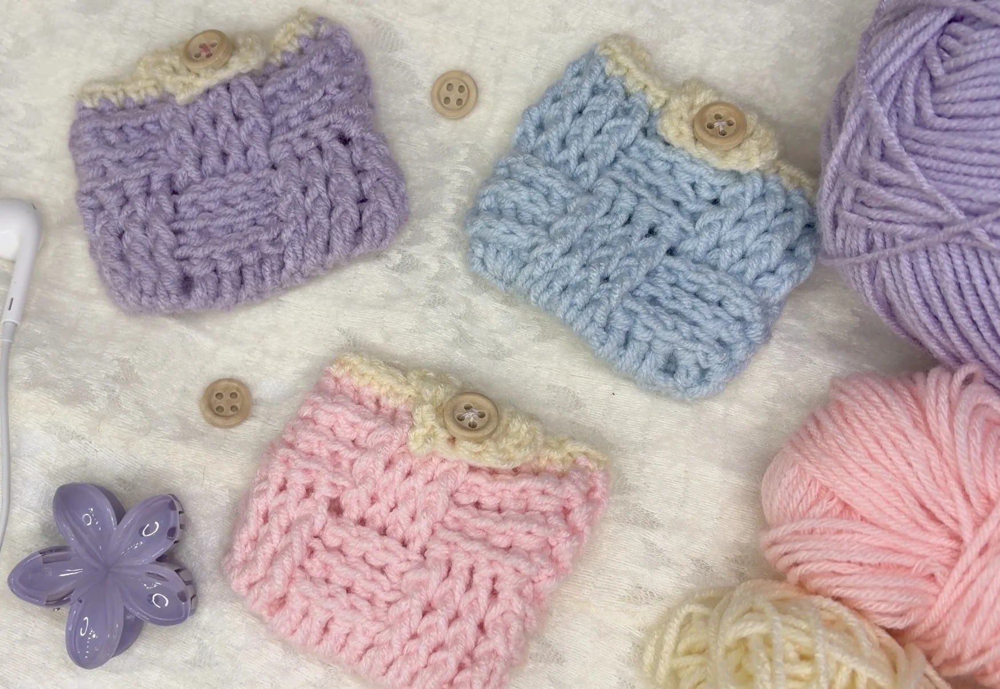
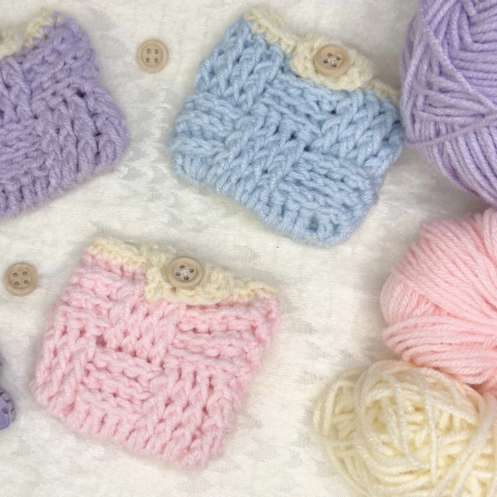

Free Crochet Pattern
How to Crochet a Cute Mini Purse | Easy Step-by-Step Tutorial + Free Pattern
This adorable mini crochet purse is made using the basket weave stitch. It is beginner-friendly, works up quickly, and creates a gorgeous textured finish that is both aesthetic and practical for storing your everyday little essentials.

About the Pattern
This mini crochet purse is a cute and practical little project made using the basket weave stitch. The textured stitch creates a neat woven look while keeping the project simple and beginner-friendly.
This tiny purse is perfect for storing earphones, jewelry, coins, keys, and other small essentials. If you are not familiar with the basket weave stitch, I highly recommend watching the video tutorial first, where the stitch pattern is explained step by step before assembling the purse.
Video Tutorial
Prefer to crochet along with a video? Watch the full tutorial on YouTube.
Materials
- Weight 3 acrylic yarn (or any yarn you prefer)
- 4 mm crochet hook
- A button for the closure (wooden, magnetic, or colorful)
- Needle and thread for sewing
- Scissors
- Stitch marker
Want to shop the materials?
Check out the materials here →Pattern Details
- Skill Level: Beginner
- Project: Mini Purse
- Stitch: Basket Weave
- Hook: 4 mm
Abbreviations
Written Pattern
How to Crochet the Mini Purse
1. The Foundation
Start by making a slip knot and creating a foundation chain. For this basket weave pattern, the stitch count should be a multiple of 8 + 4 extra chains.
Foundation: Chain 12 (8 + 4).
2. Row 1: Creating the Base
- Skip the first two chains.
- Make 1 dc in each of the next 9 stitches.
- In the very last chain, make 4 dc into the same stitch to create a curved bottom.
- Rotate your work to the other side of the foundation chain.
- Make 1 dc in the next 8 stitches.
- In the last stitch, make 3 dc, mirroring the other side.
- Slst into the very first dc to finish the row.
3. Rows 2–4: Starting the Basket Weave
Row 2: Chain 2. We will now alternate between front and back posts.
- Work 4 fpdc around the next 4 stitches.
- Work 4 bpdc around the next 4 stitches.
- Repeat this alternating pattern all the way around and slst to join.
Rows 3 & 4: Repeat the exact same pattern as Row 2 — fpdc above fpdc and bpdc above bpdc.
4. Rows 5–7: Swapping the Pattern
To get that woven look, we now swap the stitches.
Row 5: Chain 2.
- Above the previous front posts, work 4 bpdc.
- Above the previous back posts, work 4 fpdc.
- Continue this all the way around and slst to join.
Rows 6 & 7: Repeat the same pattern as Row 5.
5. The Edging
To finish the body, pull through a contrasting yarn color such as white during your last slip stitch.
Chain 1 and make 1 sc in every stitch all around for a clean, neat look.
Slst, fasten off, and weave in your ends.
6. The Flap & Assembly
The Flap
Insert your hook into the center section of the pouch, working into the middle 4 stitches.
Attach your yarn, ch 2, and make 1 dc in each of those 4 stitches for two rows.
Final Step
Sew your chosen button onto the front of the pouch using a needle and thread.
Style Tip
Experiment with different color combinations or unique buttons to make this pouch your own!
A Little Note from Stitchy Days ♡
Hi there
Thank you so much for trying one of my crochet patterns! I’m so happy to have you here, and I hope you enjoy making this project as much as I enjoyed creating it.
If you make something using this pattern, I’d love to see it! Feel free to tag Stitchy Days when you share your finished project. Seeing your creations means so much to me as I continue growing this little crochet corner.
Thank you for supporting my work and happy crocheting! ♡
